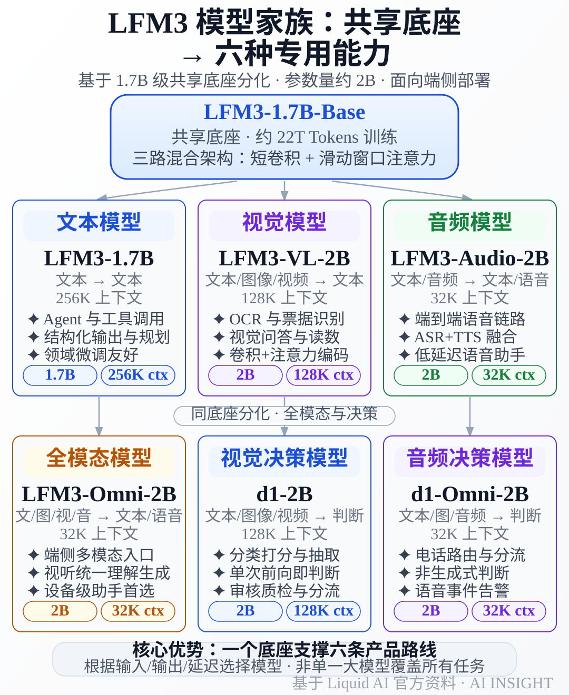

一个共享底座，六种能力：Liquid AI LFM3 端侧模型详解
2026 年 10 月 27 日，Liquid AI 发布 LFM3 模型家族。首批六款模型都在 2B 参数级，却分别承担文本、视觉、音频、全模态交互和结构化决策任务。
它的核心变化不是“又发布了一个更小的聊天模型”，而是把一个共享底座拆成六条产品路线。开发者可以根据任务选择模型，而不是让一个大模型同时承担所有模态和所有输出形式。
这条路线更接近端侧产品的真实需求：本地 Agent 需要工具调用，摄像头应用需要视觉理解，语音助手需要低延迟音频处理，客服和审核系统则更需要稳定的分类与路由结果。
先看结论：LFM3 适合什么，不适合什么
LFM3 适合四类场景：本地 Agent、设备上的图像和视频理解、语音交互，以及不需要长篇生成的结构化判断。
它不适合被当作云端前沿模型的平替。官方文档明确提示，LFM3-1.7B 不建议用于 Agentic Coding 或复杂多步推理；知识密集型任务还需要接入检索或搜索。
因此，LFM3 的判断标准不是“它能不能打过更大的模型”，而是“一个 2B 级模型能否以更低的延迟、内存和成本完成一项边界清楚的工作”。
Liquid AI 官方将 LFM3 定位为专用智能的起点。模型权重和衍生版本已经通过 Liquid AI 的 Hugging Face 模型集合 发布。
六款模型：一个底座，六种分工
六款模型都从 LFM3-1.7B-Base 分化而来。名称里的 1.7B 或 2B 是参数规模的约数，不能理解成六个完全相同的权重文件。
| 模型 | 输入与输出 | 主要用途 |
|---|---|---|
| LFM3-1.7B | 文本 → 文本 | 本地 Agent、工具调用 |
| LFM3-VL-2B | 文本、图像、视频 → 文本 | OCR、文档、视觉问答 |
| LFM3-Audio-2B | 文本、音频 → 文本或语音 | 语音助手、音频理解 |
| LFM3-Omni-2B | 文本、图像、视频、音频 → 文本或语音 | 端到端多模态助手 |
| d1-2B | 文本、图像、视频 → 结构化判断 | 分类、打分、信息抽取 |
| d1-Omni-2B | 文本、图像、音频 → 结构化判断 | 电话路由、语音事件判断 |
这六款模型的差异首先在输入输出边界，其次才是参数量。VL 负责看，Audio 负责听和说，Omni 负责多模态交互，d1 负责快速做决定。

图中最重要的结论是：LFM3 不是一个模型覆盖所有任务，而是一个共享底座支撑六种专用能力。选择模型时，应先确定输入、输出和延迟要求，再考虑模型大小。
LFM3-1.7B：给本地 Agent 用的文本模型
LFM3-1.7B 面向工具调用、结构化输出、简单规划和领域微调。官方资料称它支持 256K tokens 上下文，但模型卡仍建议知识密集型任务配合检索或搜索。
LFM3-VL-2B：视觉理解的专用路线
LFM3-VL-2B 接收文本、图片和视频，输出文本。Liquid AI 文档称它使用自研的混合卷积与注意力视觉编码器，并面向端侧部署，适合票据识别、设备读数和图像问答。需要音频输入或语音输出时，应考虑 LFM3-Omni-2B。
LFM3-Audio-2B：把音频处理放到本地
LFM3-Audio-2B 接收文本或音频，并可以返回文本、语音或两者，重点是缩短语音交互链路。传统方案通常串联 ASR、文本模型和 TTS，Audio 模型试图把这条链路压缩到更小的本地模型里。
实际部署仍要评估音频 codec、输入时长、语音质量和多语言覆盖。参数小，不代表完整语音系统的总资源消耗也小。
LFM3-Omni-2B：一个模型处理多种输入输出
LFM3-Omni-2B 是 LFM3 家族中的首个 Omni 模型，可以理解文本、图像、视频和音频，并返回文本或语音。它适合作为设备级交互入口，但视觉编码器、音频 codec 和生成模块都会影响实际延迟与内存。
d1-2B 与 d1-Omni-2B：不聊天，只做决定
d1 系列是 LFM3 中最值得关注的设计。它们不是聊天模型，而是返回校准后的判断结果，通常只需要一次前向计算，不必像生成模型那样逐 token 输出。
d1-2B 建立在视觉模型之上，处理文本、图片和视频。它可以输出分类、分数、字段或位置等结构化结果。
d1-Omni-2B 则加入音频输入，适合电话路由、语音消息分类和声音事件判断。它也不是语音转写模型，不负责生成 transcript 或语音回复。
这类模型适合客服分流、内容审核、质检、工单标签和设备告警。系统需要的是可靠的决定，而不是一段需要二次解析的长文本。
为什么共享底座重要
LFM3 的共同底座不是为了让六款模型拥有完全相同的能力，而是为了让训练、微调和部署拥有更统一的基础。
Liquid AI 资料称，LFM3 使用门控短卷积、滑动窗口注意力和全局注意力组成的三路混合架构。短卷积处理局部模式，滑动窗口注意力控制计算范围，全局注意力保留长距离信息。
这种设计针对的是端侧推理的两个矛盾：注意力机制需要处理上下文，设备又受制于内存带宽和功耗。通过不同计算机制分工，模型可以在长输入和快速生成之间取得折中。
Liquid AI 公开资料称，LFM3-1.7B-Base 使用约 22 万亿 tokens 训练，最后约 3.5 万亿 tokens 是经过整理的中训练数据，其中包含 Agent 轨迹和工具调用数据。共享底座仍不能消除视觉、音频和 d1 模型各自的编码器与后训练成本。
性能数据：小参数的价值在速度和内存
真正影响端侧产品的，不只是参数规模和基准分数，还包括首 token 延迟、持续生成速度、峰值内存、上下文长度和运行时支持。
Liquid AI 的评测表显示，LFM3-1.7B 在 29 项基准上的平均分为 49.37，对照的 Qwen3.5-9B 为 47.24。这只能说明它在厂商选择的测试集合中具有竞争力，不能推导出它在所有任务上超过更大模型。
第三方整理的厂商数据还提到，文本模型在 iPhone 17 Pro 上约为 43.6 tokens/s，内存约 1.90 GB；4-bit 版本被描述为 1 GB 级别。实际内存还要加上运行时、KV cache、上下文和多模态组件。
官方文档列出的上下文长度也不同：文本模型可达 256K，部分视觉和决策模型为 128K，其他模型为 32K 级别。长上下文下，KV cache 会成为额外压力。
对比端侧模型时，建议同时看下面几个维度：
- 任务是否真的需要图像、音频或视频输入；
- 输出是自然语言，还是分类、分数和字段；
- 设备能否承受持续运行的内存和功耗；
- 当前推理框架是否支持对应模型的输入输出；
- 许可证是否允许目标公司的商业部署。
端侧大模型的硬件瓶颈和量化方法，可以结合 2026 年端侧大模型全景：当多模态 AI 塞进手机和笔记本 一起理解。
部署形态：从手机到私有服务器
LFM3 的开放权重提供原始权重、GGUF、ONNX 和 MLX 等版本，但视觉、音频和 Omni 模型还要确认编码器、codec、输入预处理与输出解码是否完整。
| 层级 | 推荐模型 | 典型任务 |
|---|---|---|
| 手机和边缘设备 | 1.7B、VL、Audio | 摘要、识图、语音命令 |
| 笔记本和工作站 | Omni、d1 | 多模态助手、审核、路由 |
| 私有服务器 | 多模型组合 | 检索、Agent 编排 |
端云协同是更稳妥的方案：让 LFM3 负责预处理、路由和简单任务，把复杂请求转发给云端模型。正式部署前，应使用真实输入测量延迟、持续速度、峰值内存和输出稳定性。
许可证：开放权重不等于无条件免费商用
LFM3 使用 Liquid AI 的 LFM Open License。它参考 Apache 2.0，允许使用、修改和分发模型及其衍生物，但增加了商业收入门槛。
官方许可证说明显示，年收入低于 1000 万美元的企业可以免费商用；超过这一门槛的企业，需要进一步确认商业授权条件。
因此，企业上线前至少要确认三件事：使用主体的年收入是否触发门槛，分发模型或应用时是否需要保留许可证文本，以及视觉编码器、音频 codec 和第三方依赖是否拥有独立条款。
“开放权重”“开源代码”和“免费商用”不是同一个概念。模型下载页面存在许可证文件，并不意味着所有部署方式都自动获得相同的商业权利。
LFM3 与更大开源模型怎么选
如果任务是开放式写作、复杂分析或多步编程，更大的通用模型通常仍然合适。LFM3 的优势在于资源效率和清晰边界：本地分类、工具调用、图像抽取、语音命令和结构化判断都值得优先评估。
需要多模态输入、但只输出标签、分数或是否通过时，优先考虑 d1，而不是直接部署 Omni。若同时需要隐私和复杂推理，可以让 LFM3 做本地预处理与路由，再把脱敏后的复杂请求交给云端模型。
这种分层思路与 企业 AI Agent 部署指南 2026 中的模型路由和权限边界相互补充。
小结
LFM3 的看点不是“六款模型都只有 2B”，而是 Liquid AI 把端侧多模态拆成了六种可组合的能力：文本、视觉、音频、Omni，以及两种结构化决策模型。
这种拆分让模型选择从“哪个聊天模型最强”变成“哪种输入、哪种输出和哪种延迟最适合产品”。对端侧应用来说，这是比单纯追求参数规模更实用的产品思路。
不过，LFM3 的公开性能仍主要来自厂商评测，Omni 和 d1 的独立对比还不充分，许可证也对商业收入设置了门槛。真正上线前，应使用自有数据测试质量、内存、延迟、功耗和许可证适配性。
从工程角度看，LFM3 最值得尝试的切入点不是让它替代所有云端模型，而是让它先承担本地预处理、工具调用、视觉抽取、语音交互和业务路由。
免责声明
本文基于截至 2026 年 11 月 3 日可公开获取的 Liquid AI 官方资料、模型卡和媒体整理。性能数字部分包含厂商披露结果，不能视为独立复现结论。
不同硬件、量化方式、运行时、上下文长度和输入数据会导致实际结果变化。模型许可证、第三方依赖和商业授权条件可能更新，正式部署前应以对应仓库和官方许可证为准。
参考来源
- Liquid AI —— Introducing LFM3: Every Modality for Specialized Intelligence
- Hugging Face —— Build specialized multimodal models with LFM3
- Liquid AI Docs —— Liquid Foundation Models 完整模型库
- Liquid AI Docs —— LFM3-1.7B
- Liquid AI Docs —— LFM3-VL-2B
- Liquid AI Docs —— Decision Models
- Liquid AI Docs —— LFM Open License User Guide
- MarkTechPost —— Liquid AI Releases LFM3: 6 Open-Weight 2B-Class Multimodal Models
- eesel —— LFM3 explained: model, benchmarks, speed and license
相关阅读
推荐搭配装备
善其事，利其器。以下硬件能最大化你的AI体验👇
🔗 通过以上链接购买可支持本站持续运营 🙏